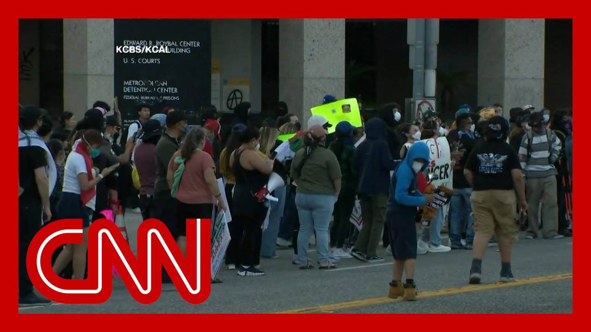

【突发：特朗普不顾加州州长反对，部署2000名国民警卫队到洛杉矶】
Summary: Breaking news: Protests erupt in Los Angeles over immigration policies, with LAPD using flashbangs and tear gas. Trump deploys 2000 National Guardsmen despite California governor's objections, while FBI investigates protester interference. CNN reports chaotic scenes including arson and confrontations with ICE agents, as analysts warn this unprecedented militarized response risks escalating tensions.
摘要： 突发新闻：洛杉矶爆发反对移民政策的抗议活动，警方使用闪光弹和催泪瓦斯驱散人群。特朗普不顾加州州长反对部署2000名国民警卫队员，联邦调查局正调查抗议者妨碍执法行为。美国有线电视新闻网现场报道包括纵火和与移民局人员对峙的混乱场面，分析人士警告这种史无前例的军事化应对可能激化矛盾。

⏱️ Estimated Reading Time: 13 min
📚 六级生词 📚 雅思生词 📚 托福生词 📚 GRE生词 📚 视频里的生词
We have breaking news now.
我们此刻有突发新闻。
You are seeing.
您现在看到的是。
Protests erupted in the Los Angeles area tonight as law enforcement squares off with crowds protesting immigration rates in the city for two days in a row, the LAPD has used flashbangs and tear gas to clear demonstrators.
洛杉矶地区今晚爆发抗议活动，执法部门连续两天与反对城市移民政策的示威人群对峙，警方使用闪光弹和催泪瓦斯清场。
The Trump administration is deploying 2000 National Guardsmen, a move California's governor called inflammatory, and the FBI says it will investigate protesters for interfering with federal agents.
特朗普政府正部署2000名国民警卫队员，被加州州长称为煽动性举动，联邦调查局表示将调查抗议者妨碍联邦特工的行为。
Let's get to CNN's Julia Vargas Jones now, who's with protesters who have gathered in downtown Los Angeles.
现在连线美国有线电视新闻网的茱莉亚·巴尔加斯·琼斯，她正在洛杉矶市中心与聚集的抗议者在一起。
And, Julia, what have you seen so far?
茱莉亚，你目前观察到什么情况？
Hi, Brian.
你好，布莱恩。
Look at we are here outside the Federal Building in downtown Los Angeles, where protesters are saying, no, they don't want ICE in Los Angeles.
请看我们现在洛杉矶市中心的联邦大楼外，抗议者高喊他们不要移民局出现在洛杉矶。
They are chanting "Out with ICE" Release the people that have been arrested.
他们呼喊着"驱逐移民局"和要求释放被捕者。
There are about 118, according to.
根据统计约有118人被捕。
Security in the several actions that took place in Los Angeles this week, some of them here in downtown Los Angeles, three of them on Friday.
本周洛杉矶发生的多次抗议活动中，部分发生在市中心区域，其中三起在周五。
And then again, today.
今天再次发生。
In about an hour south of downtown Los Angeles.
在洛杉矶市中心以南约一小时车程处。
And in the town of Paramount, that is where we saw some quite stunning video of protesters, community members stepping in and kind of stepping in the way and, federal immigration officers, as were staging for a potential raid there.
在派拉蒙市，我们拍到令人震惊的画面：社区居民介入阻挡正在部署突袭行动的联邦移民官员。
Brian, we are also, hearing the calls for the release of.
布莱恩，我们还听到要求释放。
David Grant, a prominent activist and union leader in Los Angeles.
洛杉矶著名活动人士兼工会领袖大卫·格兰特的呼声。
It was a major part of his race.
这是他竞选的重要主张。
The National Guard.
关于国民警卫队。
We are expecting a National Guard to arrive in Los.
我们预计国民警卫队将抵达洛杉矶。
Angeles soon after President Trump authorized about 2000 of them to come in.
在特朗普总统批准约2000人进驻后很快会到达。
Now, we also did hear from Governor Gavin Newsom, his statement saying that he thinks that this will only fanned the.
我们刚收到纽森州长的声明，他认为这只会助长。
Flames of these protests, which right now are quite small, even though these images I know are striking.
抗议活动的火焰，尽管目前规模不大，但画面确实触目惊心。
And I'm not sure if we have those right now.
不确定现在能否看到那些画面。
But earlier today, in Compton, just, near Paramount, where these an ICE presence was known earlier today, we saw a car set on fire.
但今天早些时候在派拉蒙附近的康普顿市，移民局出现的地方有汽车被点燃。
We can see protesters with Mexican flags setting that car on fire.
可见举着墨西哥国旗的抗议者焚烧车辆。
And that's again just an hour south of where we are.
这发生在我们所在地以南仅一小时车程处。
Just to give you that sense of how dispersed these actions are and how they are targeted, these specific locations where ICE raids are, or here where this detention center is, where some of the people that have been picked up in these raids have been brought to crime.
由此可知抗议活动分布多广且具有针对性——集中在移民局突袭点或拘留中心附近，那些被捕者被关押的地方。
All right.
好的。
Julia Vargas Jones, I want you to stay with me.
茱莉亚·巴尔加斯·琼斯请保持连线。
I also want to bring in now CNN senior national security analyst Juliette Kayyem.
现在接入美国有线电视新闻网高级国家安全分析师朱丽叶·凯耶姆。
Juliette, if you're with me, are you just heard, Julia, they're describing the scene.
朱丽叶，听到茱莉亚描述的现场情况了吗？
But from the images that we've been putting on our air so far, what stands out to you at the moment?
根据我们播出的画面，目前什么最令你关注？
So there's unrest?
这是骚乱吗？
let's start with there's protest, lawful protest, which is allowed in this country.
首先这是合法的抗议活动，在这个国家是被允许的。
There is some unrest generally dealt with by local law enforcement.
有些骚乱通常由地方执法部门处理。
And if there needs to be state, support through state police, and sometimes even under a governor's authority.
必要时通过州警提供支援，有时甚至需要州长授权。
what is happening tonight is, is unprecedented.
今晚发生的事是史无前例的。
I, in a variety of ways.
从多个方面看都是。
Generally, when the National Guard is federalized to be deployed into a state.
通常国民警卫队被联邦化部署到某州时。
So understanding it's a it's called title ten federalization.
这被称为第十编联邦化。
And it means that the National Guard goes from reporting to the governor to reporting to the president of the United States.
意味着国民警卫队从向州长汇报转为向美国总统汇报。
Generally, historically, when that's done, there's only two instances.
历史上这种情况只发生在两种情形下。
One is when a state is overwhelmed and so think Hurricane Katrina, I just looked up the numbers in Hurricane Katrina, about 7000 were federalized.
一是州政府无力应对时——比如卡特里娜飓风期间，我查到的数据是约7000人被联邦化。
So under just the comparison to 2000 for a couple of hundred protesters, you can just get a sense of the, of the sort of reaction that the Trump White House is having, the second type of instance where you would see a president ignore a governor's wishes is if the governor, defies a court order.
相比之下当前仅几百名抗议者就部署2000人，可见特朗普政府的反应程度；第二种情形是州长违抗法院命令时总统会无视其意愿。
So that's Little Rock, the civil rights cases in which the president federalized the National Guard to allow, to support the Supreme Court's decision, modern history hasn't seen something like this.
比如小石城事件中，总统为支持最高法院裁决将国民警卫队联邦化，现代史上没有类似当前这种情况。
And I think that's why Gavin Newsom and certainly, our reporting from Josh Campbell regarding the concerns, even in local law enforcement, is now there's this federal overlay that is, is hostile to, to the the sort of the way it generally works and there is no training.
因此纽森州长及我们记者乔什·坎贝尔报道的连地方执法部门都担忧——这种联邦干预违背常规运作方式且缺乏培训。
we don't know what their rules of engagement are.
我们不清楚他们的交战规则。
We don't know why 2000 have to be deployed.
不明白为何必须部署2000人。
I'm looking at the pictures.
我看着这些画面。
I'm not minimizing civil unrest.
并非轻视社会动荡。
Violence should not be used.
不应使用暴力。
there's it's against the law to disrupt a federal law enforcement action.
妨碍联邦执法行动是违法的。
but we have tools to do with this that are far less, let's just say, caustic, than what Donald Trump has decided to do tonight.
但我们本可采用远比特朗普今晚决定更温和的手段。
And I just want to put that in historical perspective.
我想从历史角度说明。
Some of our viewers will think that's right.
部分观众可能认为这合理。
but historically, this is this is not, typical.
但历史上这并不典型。
And the numbers, when you just compare this to Hurricane Katrina, those of us who remember Hurricane Katrina, entire city and court system underwater, you get a sense of of of why Governor Newsom and local law enforcement are very concerned about what's about to happen.
对比卡特里娜飓风期间整座城市和司法系统瘫痪的状况，就能理解纽森州长和地方执法部门为何对即将发生的事如此担忧。
I know California leaders had said that this will only inflame the situation.
我知道加州领导人说过这只会激化局势。
what do you think of of the historic nature of this, that that this has happened where there's been that transfer of power to, the president from a governor?
你如何看待这种权力从州长转移给总统的历史性事件？
since Katrina?
自卡特里娜以来？
is there any oversight for that situation in the aftermath to be able to look and say, was was this, done above bar?
事后是否有监督机制来评估此举是否合法？
Was this legal?
这合法吗？
what's the situation there?
情况如何？
Well, what the historical precedent is la right.
历史先例是。
Is that was actually cooperative as well.
需要合作。
And the after actions that I know very well, this is my space, this intersection between military homeland civilian is that it was there before the grace of God.
根据我对军民交界领域的了解，事后行动本应遵循规范流程。
Was there not friendly fire?
难道没有误伤风险吗？
because I mean, look, our federalized troops are trained to do something, and that's something is the use of force.
因为联邦化部队受训目的是使用武力。
They are not trained to de-escalate, a political situation, I mean, you know, the language that's being used by the White House, I'm I'm looking I'm from LA.
他们没受过化解政治危机训练，白宫的措辞...作为洛杉矶人我看着。
I'm looking at people running errands like, this is not a city that is not able to function.
看到市民正常生活，这座城市运转正常。
and so the, the, the Trump White House has now lowered the bar.
特朗普政府降低了标准。
And so in, in terms of operational planning, we don't know how they will be deployed, what the rules of engagement are.
在行动规划方面，我们不清楚部署方式和交战规则。
Are they working or are they in conflict with the Los Angeles Police Department?
他们与洛杉矶警局是协作还是对抗？
This is a sophisticated department, quite large.
这是个庞大而成熟的部门。
and 2000 troops again is a lot.
2000名士兵是很大规模。
It is it is not.
这不是...
It is.
这是...
This is a significant number of federalized troops.
这是数量可观的联邦化部队。
Again, that number of federalized National Guard during Hurricane Katrina, a city that had lost 2000 people that could not function its ports could be not weren't open, its prisons weren't open as police force, was not functional.
卡特里娜飓风期间整座城市失去2000人，港口监狱瘫痪，警力失效时联邦化的国民警卫队数量。
you only saw the federalization of about 7000 troops, of the National Guard.
也只有约7000人。
So this is, and and and that was at the request of the governor.
而当前部署...那次是应州长请求。
This is in defiance of a governor's request.
这次违背了州长意愿。
So I do think there is, a high likelihood, that this will, engage, incite conflict.
因此我认为极可能引发冲突。
But my my equal concern is without, a sort of standard, a process by which the these 2000 are deployed.
但同样担忧的是缺乏部署这2000人的标准流程。
Rules of engagement.
交战规则。
who are they working with?
他们与谁协作？
What's their mission?
任务是什么？
What?
什么？
I mean, this this is this is a bunch of protesters, but we know how to deal with that.
这只是一群抗议者，我们本知道如何应对。
I mean, in, in civilian society, so without editorializing, I just want to give the comparisons is, is this is, unprecedented?
在公民社会中...不作评论只想对比说明：这是史无前例的。
The numbers are large.
规模庞大。
the threat does not seem to be one in which, the state has fallen apart, the city has fallen apart.
威胁程度并未达到州府或城市崩溃的地步。
if there are, criminality, if criminality is ongoing in terms of disrupting a federal law enforcement efforts such as an immigration raid, those people ought to be arrested.
若存在妨碍联邦移民突袭等执法行动的犯罪行为，应逮捕那些人。
But, this is, I think, part of an overall, reaching by the Trump White House to utilize federal military resources without an insurrection, without a major flood, without a major crisis, and in defiance of, of, political leadership there.
但这是特朗普政府在未发生叛乱、洪灾或重大危机时，违抗地方政治领导意志滥用联邦军事资源的行为。
and, and we'll see what happens overnight.
我们且看今夜发展。
Julia Kim and Julia Vargas Jones in Los Angeles.
洛杉矶的茱莉亚·金和茱莉亚·巴尔加斯·琼斯报道。